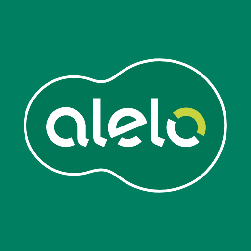
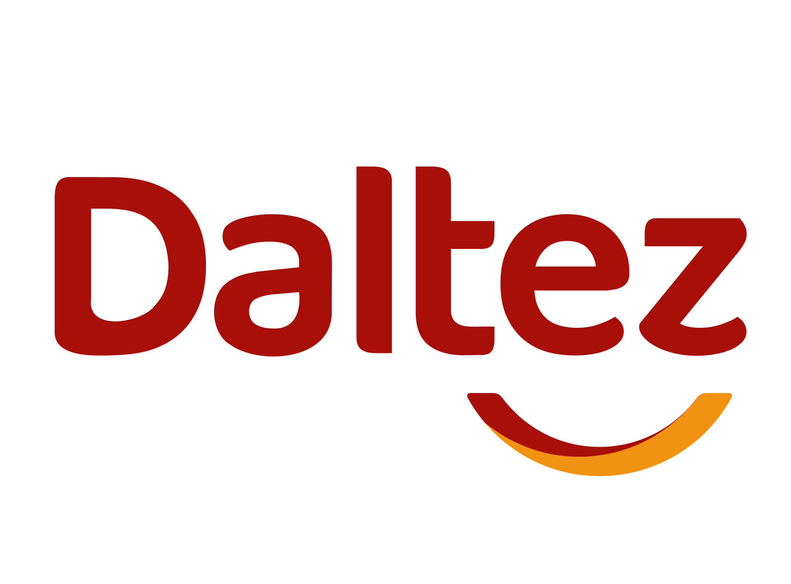
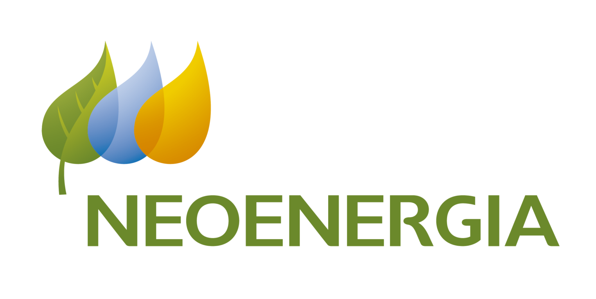
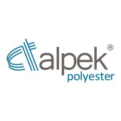
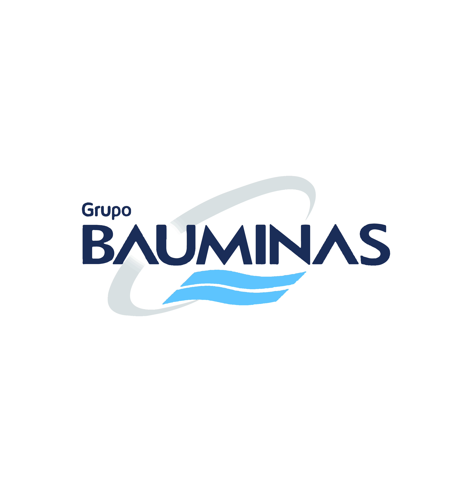

Tinha escopo global no time de monitoramento de métricas de crédito.

Focado em problemas de governança de dados no time B2C, assumi a liderança de uma squad de prodOps, atuando na disseminação de dados para as squads e em um projeto de tagueamento do aplicativo.

Conduzi projetos na área comercial e de inteligência de mercado.

Idealizei e desenvolvi do zero um projeto de BI da gerência de atendimento ao cliente, centralizando todos os indicadores operacionais e de qualidade.

Passagem mais operacional, mas que me trouxe dados de uma área que não tinha essa cultura. Estruturei indicadores de carteira, crédito e vendas, e automatizei processos que antes eram manuais.
Atuei como guardião do orçamento da diretoria de infraestrutura, acompanhando CAPEX e OPEX e construindo forecasts mensais. Aqui, foi onde comecei a ter que lidar com grandes volumes de dados.

Meu primeiro trabalho. Realizei análises de resultados comerciais (vendas diretas e licitações). Me tornei referência interna em Excel e fui expandindo para outras áreas da empresa, criando dashboards e automatizando processos.
"Marcos é um profissional apaixonado por Excel que está sempre em busca de melhoria contínua, inovação, de aprender novas tecnologias e adquirir novos conhecimentos para transformar em soluções na sua rotina de trabalho e no suporte aos outros departamentos."

Gerente Comercial | Liderança de Equipes
"Marcos é um profissional que personifica a excelência, além de ser uma das pessoas mais intraempreendedoras que conheço. Sua busca por aprimoramento em Excel e Gestão de Dados é constante, além de novas ferramentas para resolver lacunas e dificuldades que possa porventura encontrar..."

KSD | Agilidade | Transformação Digital
"Marcos tem uma rara combinação de qualificação técnica e competências comportamentais. Trabalhar com ele foi um experiência de trocas muitas ricas e grandes aprendizados. Liderando a estruturação de processos, organizou o fluxo e elevou o patamar de entrega do time de dados."

Senior Data Analytics Specialist
"Recomendo demais! Marcos sempre foi referência nos assuntos em que acompanhei. Profissional com alto domínio técnico, mas ao mesmo tempo uma visão de negócios diferenciada. Nunca se limitou a um escopo específico, conseguindo se adaptar a qualquer contexto, seja de produtos, crédito..."

Especialista Prevenção à Fraude | PM